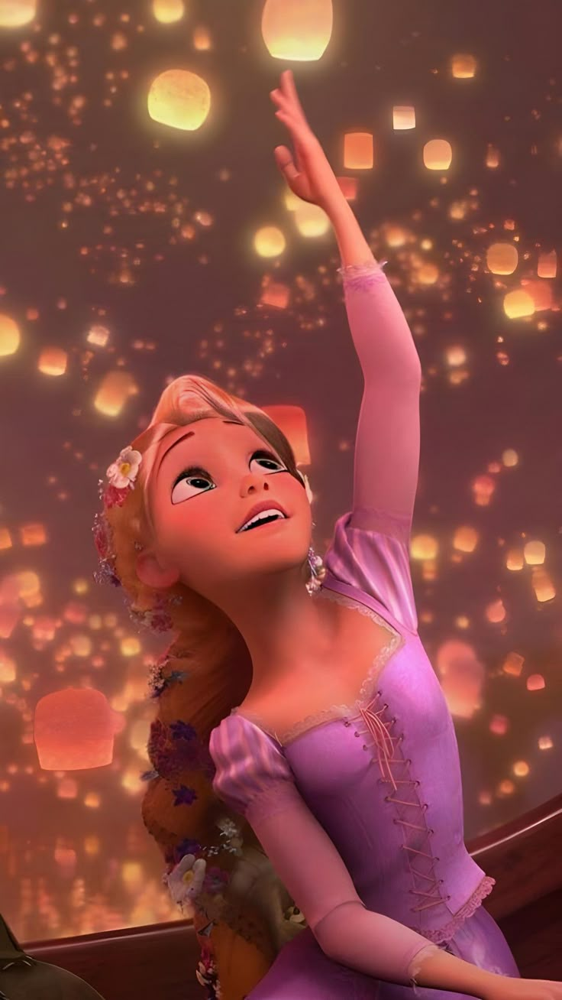
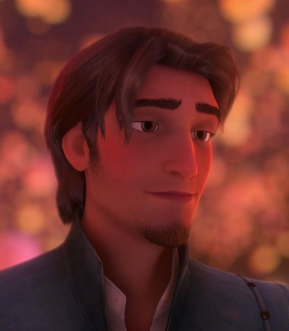
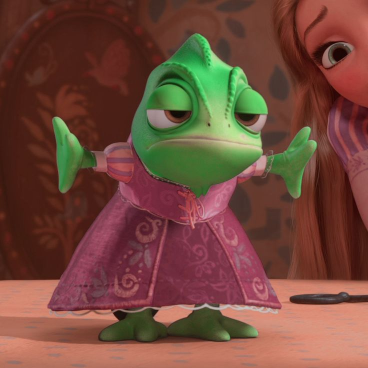
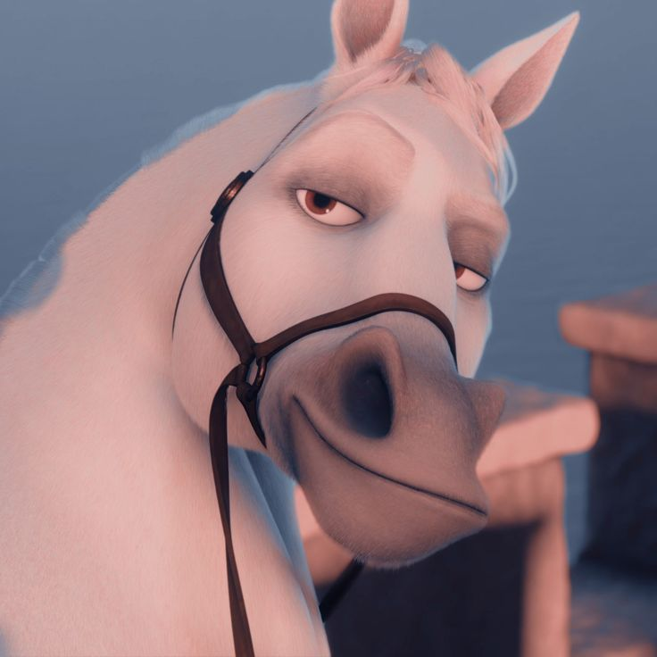
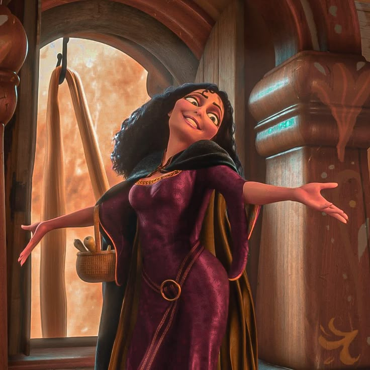
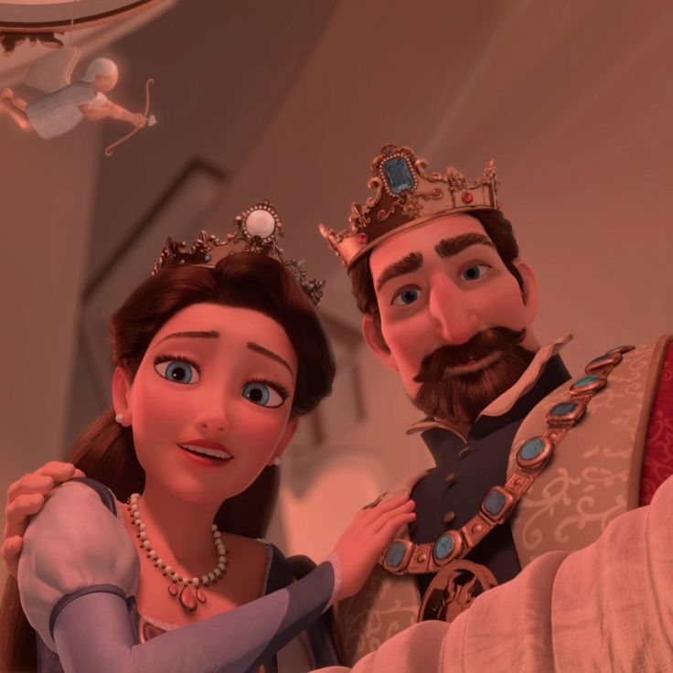

Uma Jornada de Fã por
Enrolados
Onde cada sonho é uma lanterna
esperando iluminar o céu
"Faz dezoito anos que fico olhando pela janela, sonhando com o que vou sentir quando aquelas luzes subirem no céu."
Começar a Jornada





- 01 Quando Começará Minha Vida 3:35
- 02 Quando Começará Minha Vida (Reprise) 0:55
- 03 Mãe Sabe Tudo 2:47
- 04 Eu Tenho um Sonho 3:10
- 05 Eu Vejo a Luz 3:30
- 06 Something That I Want 1:58
✦ A música é sua para descobrir — ouça na sua plataforma favorita ✦
Muito antes das lanternas subirem sobre as águas de Corona, existe um espaço tranquilo — uma torre de luz dourada — onde aqueles que amam esta história se reúnem para lembrar como se sentiram ao ver aquelas luzes pela primeira vez.
Este não é apenas um site de fã. É uma carta escrita em tinta e luz das estrelas, um bilhete de amor a um filme que ensinou a uma geração que sonhos não são ingênuos — são as coisas mais corajosas que carregamos.
Aqui, o mundo de Rapunzel, Eugene, Pascal e Maximus respira novamente. Cada lanterna nestas páginas foi acesa com intenção. Cada palavra foi escolhida com cuidado. Cada sombra existe apenas para fazer a luz brilhar mais forte.
Bem-vindo, viajante. O reino estava esperando por você.